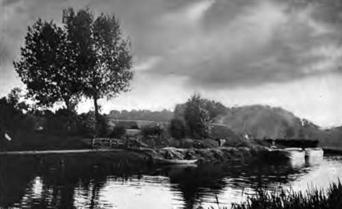
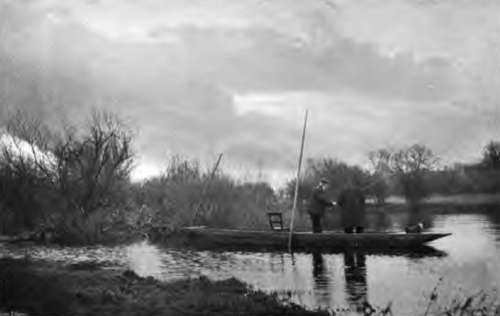

Angling For Roach. Continued
Description
This section is from the book "Fishing", by Horace G. Hutchinson. Also available from Amazon: Fishing.
Angling For Roach. Continued
An excellent way of roach fishing is ledgering with float tackle and ground bait. The white paste bait with the hook in it is embedded in a bit of ground bait pressed round it; this is carefully and gently swung out and allowed to sink; the rod is then held still so that the float just appears above the surface and is held against the current. The fish break up the ground bait and take the paste inside, and the welcome " knock " at the float is responded to by a gentle "hit" on the part of the angler, and a dozen or so of big roach caught in this way give capital sport. In fishing from a boat or punt for roach, the style of fishing depends on the nature of the river. In the Thames the punt is fixed across the run of the stream, the float and line is dropped in near the punt and the current carries it down as far as the line will allow, then the angler strikes, pulls up, and begins again. In thus fishing the line is as long or longer than the rod between it and the float. On the Norfolk rivers the boat is generally fixed a few yards off the bank parallel with the stream, and the anglers cast up stream and let the float travel down in front of and past them as far as the line allows. In tidal waters you require to plumb the depth every now and then so as to keep the bait just off the bottom. A white gentle with a red chrysalis on the point of the hook is often a very good roach bait; wheat stewed on the hob until the outside skin bursts is another good bait; paste made of arrowroot biscuit, or of new bread, or stale bread, or flour mixed with a little cotton wool is excellent. The thing is to avoid making the paste so tough that it prevents the hook penetrating. I often use two paste baits at once, one white and one coloured red with a little vermilion powder, and fish one, two, or three inches above the other. In the rivers and broads of Norfolk and Suffolk red paste is very killing. Roach will take all kinds of worms, from the tiny blood worm to the big lob; the tail of a lob is an excellent bait when the water is running down after a flood; it should be fished on light ledger tackle in quiet sheltered parts of the water near the bank, as the fish collect in such places to get out of the stress of the stream. Fishing for roach with a float in the Nottingham style is perhaps the most difficult, as the very fine line and delicate fast running Nottingham reel require much skill to handle properly. I have had good sport in the early morning of a hot summers day fishing for roach with a house fly, as described by Walton. You pinch on a shot close to the hook, put a fly on, and then sink it quickly in any deep hole near a bridge or under a tree, sink it to the bottom and then draw it gently to the surface, and if there are any roach about and they are hungry they will rise after it, and, as Walton says, "gaze at it," and then one bolder than the rest will swim up to it and take it. No float is needed, as you see the whole operation, and most interesting it is to see some fine roach follow your fly. In the same way a caddis bait can be fished in hot bright weather, using a long light rod, and dropping the bait gently into spaces between weeds; perch and chub will often take a bait fished in this way, without float.
The teeth of the roach are, like those of the carp family generally, in the throat; the colour varies very greatly, is generally a steel blue along the back, the sides and belly silvery. In the Cuckmere River, in Sussex, I have caught roach which were all silvery white like a bream flat. This river was always muddy when I fished it. Except when the fish are small the iris of the eye is a bright red, the fins vary from pale red to deep blood red, sometimes the general appearance of the side scales is more golden than silvery. At the spawning season in April and May the scales of the males are covered with little white warts, which make them feel as rough as a file to the touch. The female is then often of a very red appearance, caused by the surface veins being full of blood. It spawns on water plants and is extremely prolific.
As food the roach is not of much account, being bony and tasteless when not of a muddy flavour. I have no doubt that the flavour of many of our fresh-water fish could be greatly improved, but with sea fish so plentiful and cheap the game is not .worth the candle-that is doubtless the real reason why all our fresh-water fish are so neglected as food. The roach is in best condition and affords the best sport in the autumn and winter. I have often had capital sport when it was freezing hard, fishing with a very small sneck bend hook (No. 14) with short shank and tiny pellet of paste. The roach is not found in Ireland, at least the reported roach from that country which have been sent to me have always proved to be rudd. In general appearance the roach and rudd are so much alike as to be often mistaken one for the other. In referring to the rudd, I shall show how the true roach can be easily distinguished from the true rudd, but I have occasionally seen most handsome fish which were no doubt a cross. The finest roach I think I have ever seen came from that fine sheet of private water, Luton Hoo; many of them appeared to have a slight strain of rudd. If a roach angler gets a fish over 2 lbs. it is well worth preserving, whether roach or rudd, and is very interesting for comparison. Care in handling is necessary, as the scales come off easily. The best plan is to kill the fish, then wrap it in paper, and pack in a box for conveyance to the taxidermist. For natural history museums painted casts of fish are much in fashion, but to the angler nothing in the shape of a cast can be so interesting as the form of the fish itself, with the actual fins and tail which resisted you so stoutly when guided by the intelligence which once resided in that small head. I forgot to mention that in shallow streams and lakes, or in shallow places in any water where roach abound, they may often be taken with the natural fly or the artificial. Early in the morning, soon after sunrise, in hot weather, I have often had good sport with the fly-rod among the roach. In trout streams they are often a nuisance to the trout angler, especially when the mayfly is on. A good many years ago, when I belonged to the Stour Fishery Association, which preserves the river for some miles above Canterbury, I was much amused at the very persistent way in which a shoal of big roach annoyed a trout, a fish of nearly 2 lbs., which had taken up a position at the head of a stretch of water between two weed-beds, and was looking out for mayflies. But the roach were also looking out for mayflies, and rising at every one they saw, even invading the feeding-ground of the trout, who was kept so busy driving the roach away that he had not a moment to get a fly himself. On another occasion, when mayfly fishing with that prince of sportsmen, the late Mr. T. J. Mann, on his water below Horsebridge on the Test, the big roach in the grand stretch below the eel weir were sucking in the mayflies as fast as the trout. Noticing a fish rising off the edge of some weeds, I was doubtful until I hooked it as to whether it was roach or trout, and when I look on the 5¼-lb. trout in his case, I think of the splendid fight he made, leaping like a grilse. I had a grayling over 3 lbs. the same day, and that also I thought was a roach until I hooked it. The trout I hooked during the height of a terrific thunderstorm, when forked lightning was flashing all round, and yet I never saw the fish rise better-roach, grayling, and trout took no notice of the storm. It is not wise to carry a steel-ringed landing-net or a steel centre rod during a thunderstorm.
40.- A Suffolk River.
41.- The Contemplative Mood
Continue to: